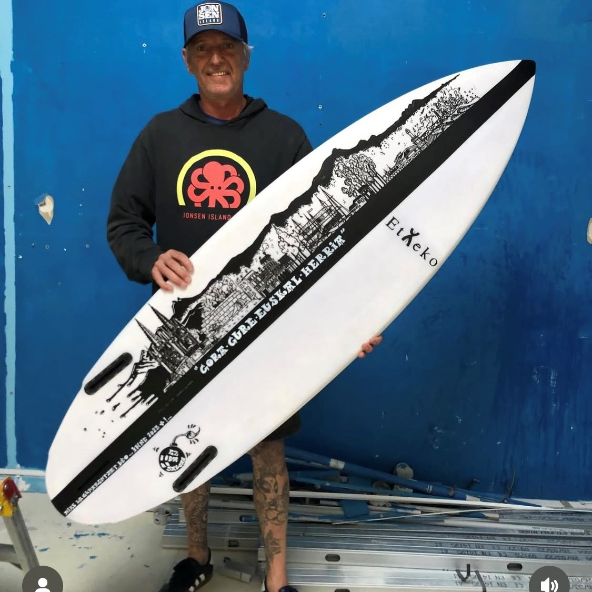
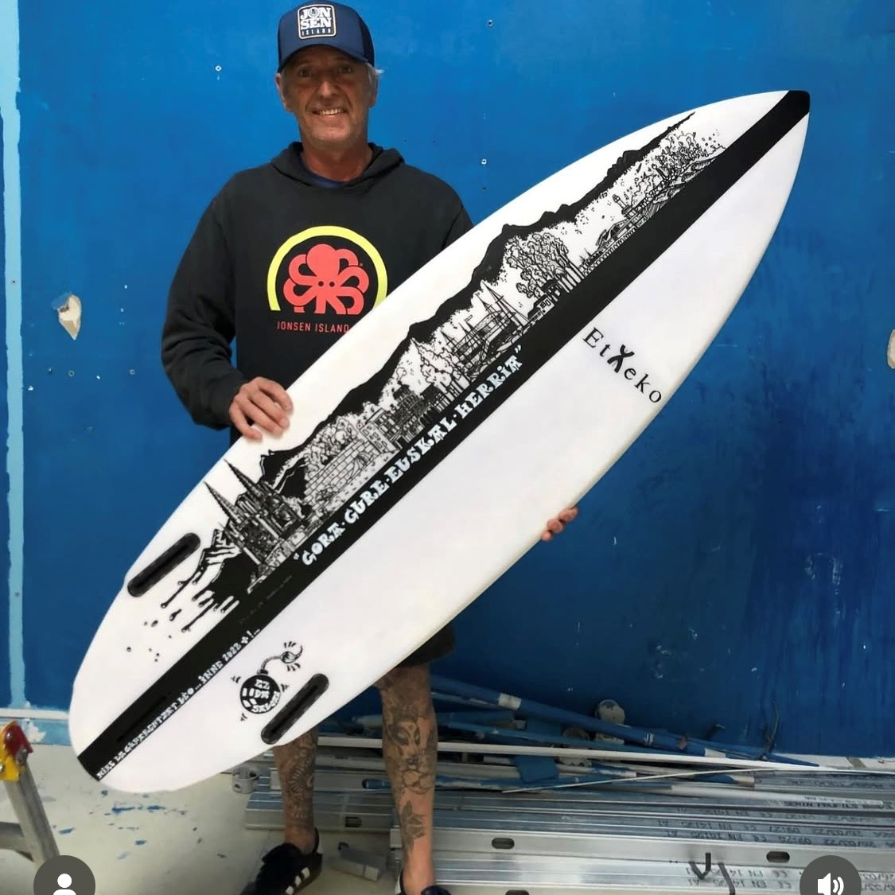

Punchline bien carré le saang de la veine
et mm un retour à la ligne stv


 

Un lancement ? Un mariage ? Ou juste l’envie de marquer le coup ?
INNE X ZEYRO, c’est pas de la série.
C’est pour celles et ceux qui veulent du fait pour. Pas du tout-fait.
T-shirts, casquettes, éditions courtes.
Petites quantités, grandes gueules.
Du style comme t’en vois pas partout.
À ton image.
À notre sauce.
Lasai. On imprime ton feu.
📸 Instagram : @inne_laurent & @__zeyro__
📱 WhatsApp : Inne : +33 6 66 79 20 70 & Zeyro : +33 6 42 98 12 88
📧 Email : votremail@email.com